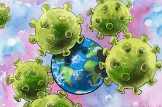

COVID-19 DÜNYAYI OLUMSUZ ETKİLİYOR !!
Dünya
- Dünya Sağlık Örgütü, koronavirüsü pandemi ilan etti.
- ABD, ulusal acil durum ilan etti.
- İspanya'da tüm ülke karantina altına alındı.
- İtalya'da tüm ülke karantina altına alındı.
- Çin, Vuhan dahil 13 şehri karantina altına aldı.
- Fransa, ülke çapında alarm seviyesini 3'e yükseltti. 17 Mart 2020 tarihinden itibaren Fransa'da kısmi sokağa çıkma yasağı ilan edildi. Bu kapsamda halka İçişleri Bakanlığının sitesinden alacağı belgeyi yanında bulundurarak, belgede yazılı 5 durum haricinde dışarı çıkmaması gerektiği söylendi. Buna uymayan ve belgeyi yanında bulundurmayanlara 135 euro ceza kesileceği İçişleri Bakanı Christophe Castaner tarafından açıklandı.
- Bulgaristan, virüsün yayılmasını engellemek için ülkede 13 Nisan 2020'ye kadar olağanüstü hâl ilan etti. Okullar, üniversiteler ve spor müsabakalarına bir ay ara verildi. Alınan OHAL kararıyla ilgili ülkenin sınır geçişlerinin ve vatandaşların uluslararası yolculuklarının sınırlandırılması bekleniyor.
- Irak'ta, yeni tip koronavirüs (Kovid-19) salgını nedeniyle 14 Mart'tan itibaren Musul kentinde 2 gün sokağa çıkma yasağı ilan edildi.
- Suudi Arabistan - Kâbe'de tavaf kısıtlandı.
Spor organizasyonları
- 2020 Avrupa Futbol Şampiyonası koronavirüs pandemisi nedeniyle 2021 yılına ertelendi.
- 2020 Eurovision Şarkı Yarışması koronavirüs pandemisi nedeniyle 2021 yılına ertelendi.
- 2020 Yaz Olimpiyatları koronavirüs pandemisi nedeniyle 2021 yılına ertelendi.
Türkiye
- Yunanistan ve Bulgaristan'a açılan sınır kapıları, koronavirüs (Covid-19) önlemleri kapsamında yolcu giriş ve çıkışlarına kapatıldı.
>
- Aralarında İngiltere, İsviçre, Arabistan ve Mısır olmak üzere 20 ülkeye uçuşları askıya alındı.
- Umre ziyaretinden dönen kişiler Ankara, Konya, Kayseri ve Isparta şehirlerinde boşaltılan öğrenci yurtlarında Karantinaya alındı.
- Mart tarihinde başlamak üzere, tiyatro, sinema, lokanta, kahvehane, internet kafe ve kapalı çocuk oyun alanlarının faaliyetlerinin durdurulmasına karar verildi.
- Bütün okullar 16 Mart Pazartesi'den itibaren tatil edildi.[72] Tüm okullar uzaktan eğitim ile çevrimiçi eğitime devam ederken ilk ve orta öğretimde LGS ile YKS gibi toplu sınavlar dışında sınav yapılmaması kararlaştırıldı. Yükseköğretimde ise çevrimiçi sınavlar ya da öğrencilere genelağ yoluyla iletilecek ödevler ile değerlendirme yapılmasına karar verildi.
- Marketlerdeki makarna, bakliyat ve el hijyeni rafları boşalırken, bu ürünlerin fiyatı arttı.
- Tıbbi maskeler karaborsaya düştü ve fahiş fiyatlarla satılmaya başlandı.
- Kolonya stoklarının azalmasıyla kolonya kuyrukları oluştu.
- İstanbul'da toplu ulaşım kullanımı %59,1 azaldı.
- Türkiye; Norveç, Hollanda, Almanya, İsveç, İspanya, Fransa, Belçika, Danimarka, İtalya, Avusturya, Irak, İran, Gürcistan, Azerbaycan, Çin ve Güney Kore olmak üzere 16 ülkeye kapılarını kapattı.
- Dezenfektan üreten meslek lisesi sayısı arttırıldı.
- 21 Mart'ta İçişleri Bakanlığı tarafından 65 Yaş ve üstü ile kronik rahatsızlığı olanlara sokağa çıkma yasağı ilan edildi.
- İstanbul Büyükşehir Belediyesi, 6 Nisan Pazartesi gününden itibaren metro seferlerinin 21.30'a kadar yapılması kararını aldı.
- Türkiye, Tüm yurtta maske satışı yasaklandı ve devlet tüm vatandaşlara ücretsiz maske dağıtmaya karar verdi. Maske siparişleri E-Devlet üzerinden alınmaya başlandı.[81] Daha sonra maske dağıtımının yanında maske satışına da izin verildi. Maskeleri fahiş fiyattan satan üretici ve satıcılar hakkında soruşturma açılmaya ve işlem yapılmaya başlandı.
- İç İşleri Bakanlığı verilerine göre, "Evde kal" çağrıları kapsamında kendini karantinaya alan ailelerde geçimsizlik arttı.[82] Verilere göre son 3 ayda boşanmak isteyenlerin çiftlerin sayısı 4 kat arttı.[83] Sağlık portallarında çiftlere yönelik terapi yazıları[84] yayınlanmaya başladı.
- 27 Nisan itibarıyla İçişleri Bakanlığı tarafından 30 büyükşehirde ve Zonguldak'ta Ramazan Bayramı sonuna kadar sokağa haftasonları çıkma yasağı ilan etti.
- 20 Nisan'da Türkiye Ekonomi Politikaları Araştırma Vakfı, "COVID-19 Salgınında Türkiye’de Zirve Noktası ve Normalleşme Dönemine Kademeli Geçiş Zamanı Tahminleri[85]" isimli araştırmasını yayınladı. Mevcut koşullarda Türkiye için Temmuz gelmeden normalleşme öngörülüyor.
- 23 Mayıs-27 Mayıs arasında Ramazan Bayramı ve Arifesi süresini kapsayacak şekilde tüm yurtta sokağa çıkma yasağı ilan edildi.
- Singapur'da yapılan yapay zeka araştırmasında ülkelerde salgının ne zaman biteceği öngörülmeye çalışıldı. Türkiye'de salgının mevcut koşullarda 8 Eylül'de son bulacağı tahmin edildi.
Özel şirketler
- British Airways, Finnair, Qatar Airways, United Airlines ve Air Canada, çeşitli sebepler belirterek Çin'e uçuşlarını askıya aldı.
- Starbucks, Çin'deki şubelerinin yarısından fazlasını kapattı.
- Türk Hava Yolları, Çin'e uçuşlardaki talep azlığından dolayı Çin'e düzenlenen uçuş seferlerini azaltma kararı aldı.
- Ikea, Çin'de bulunan mağazalarını kapatma kararı aldı.
- Tesla ve Apple Çin'deki bazı fabrikalarını geçici olarak kapattı.
- Volkswagen, fabrikalarında üretimi iki haftalığına durdurdu.
- Airbus, Michelin, Skoda, Brembo, Maserati, Renault Grubu, Fiat, Lamborghini ve Ferrari dâhil birçok firma İtalya, İspanya, Fransa, Sırbistan, Slovakya ve Polonya'daki fabrikalarında üretime ara verdi.
- Toyota, Sakarya'da bulunan üretim tesisinde 2 hafta üretime ara verdi.
Eğitim
- Zihinsel sağlık
- Covid-19 pandemisi ruh sağlığı krizlerini tetikledi. Anketlerde ABD'de her üç vatandaştan biri klinik depresyon ve anksiyete belirtisi olduğunu belirtti. Pandemi tüm yaş gruplarını etkilerken özellikle okullarından uzak kalan ve ekonomik belirsizlikle karşı karşıya kalan öğrenciler için durum daha zor hale geldi. Evde çocuklarına bakmak zorunda kalan yetişkinler ise iş ve evde eğitim arasında bir denge kurmanın zorluklarını yaşadı. Salgınla mücadelede öne çıkan sağlık çalışanları ise başka hayatları kurtarmak adına hayatlarını tehlikeye attılar. Türkiye'de sağlık çalışanlarının izinleri iptal edilirken istifa etmeleri ise engellendi.[94] June Gruber ve Jonathan Rottenberg ortak bir makalelerinde virüsün insan vücuduna ölümcül etkisi kadar zihinsel sağlığa da ölümcül bir etkisinin olabileceği ihtimalini göz önünde bulundurdular. Bazı tahminler ise zihinsel ya da ruh sağlığı nedenli ölümlerin doğrudan virüs etkisiyle ölenlerle kıyas edilebileceğini gösterdi. ABD'de Well Being Trust'un bir çalışmasına göre ülkede Covid-19'dan ölenlere Mayıs 2020 itibariyle 27,644 ila 154,037 arasında insan ölümü daha eklenebilir ve bu ölümlerin temel noktası Covid-19'un tetiklediği umutsuzluk, toplu işsizilikler, sosyal izolasyon, depresyon, anksiyete bozukluğu gibi nedenler olabilir.